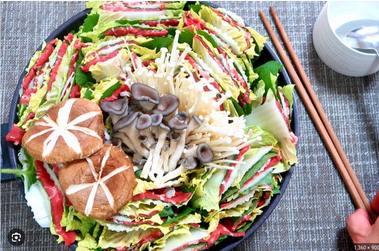

Cabage Nabe

Healthy vegetable and meat soup
Ingredients
- Asian Cabage
- Thinly Cut Beef
- Bukchoi
- Enoki Mushrooms
- Soup Powder
Steps
- Cut the cabage into square shapes
- Stack cabage, beef, and bukchoi in order and repeat three times
- Put the stacked layers into the pot
- Pour 200ml water and add some seasonings
- Boil until the ingredients fully cooked